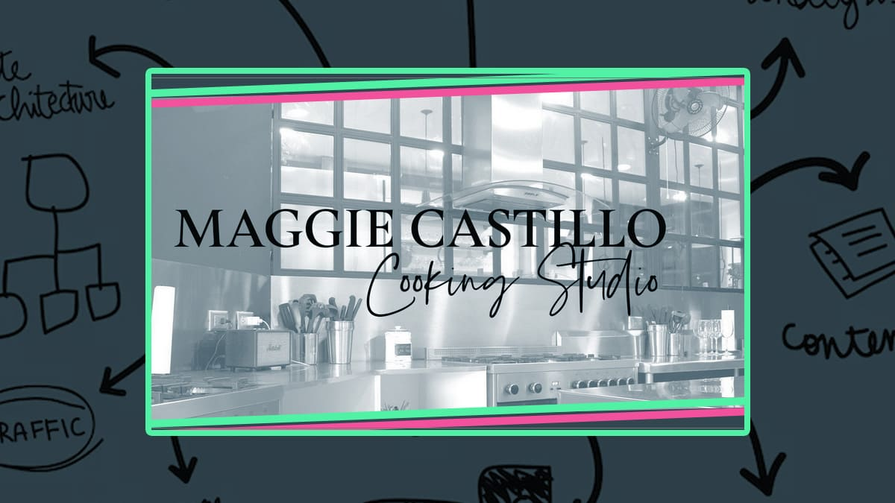
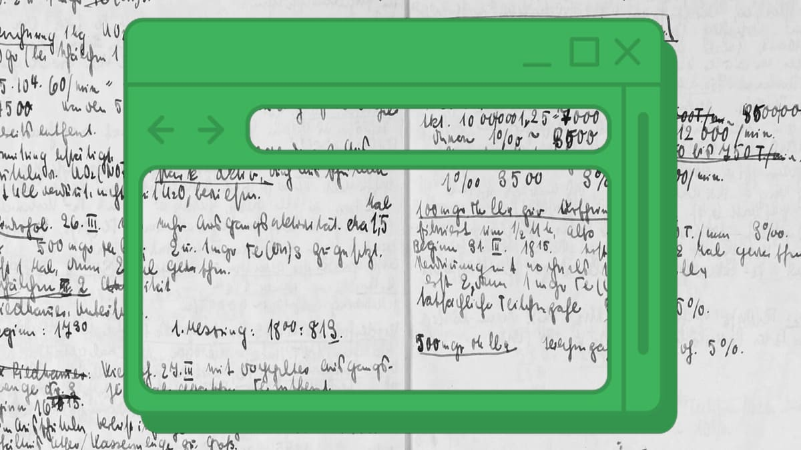
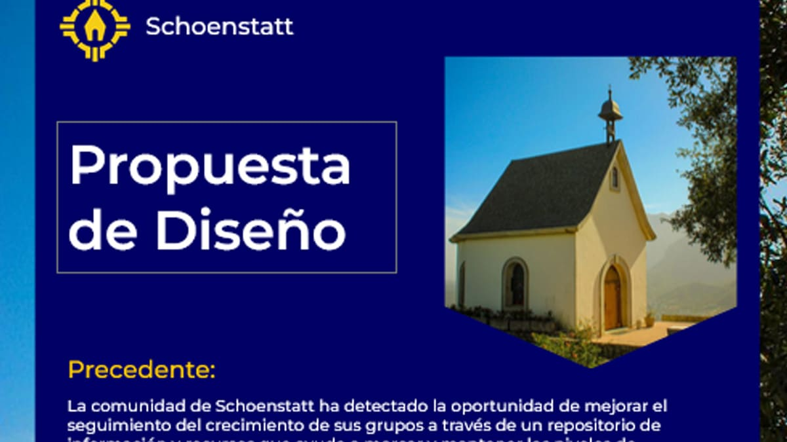

I'm Carlos - I use Design to overcome complex Challenges.
My professional background is defined by bridging the gap between disciplines in dynamic and/or uncertain environments.
As a product manager and designer, I am focused on building intuitive user experiences while ensuring alignment with key business objectives.
I'm Carlos - I use Design to overcome complex Challenges.
My professional background is defined by bridging the gap between disciplines in dynamic and/or uncertain environments.
As a product manager and designer, I am focused on building intuitive user experiences while ensuring alignment with key business objectives.
I'm Carlos - I use Design to overcome complex Challenges.
My professional background is defined by bridging the gap between disciplines in dynamic and/or uncertain environments.
As a product manager and designer, I am focused on building intuitive user experiences while ensuring alignment with key business objectives.
Project Highlights

Empowering a Small Business with AI-Forward SEO
Initially hired to deliver a basic SEO course, I pivoted the scope after a proactive audit revealed the client didn't need training, they needed a tailored strategy. I designed a comprehensive, proprietary manual on advanced SEO and RAO (Retrieval Augmented Optimization), providing the team with a long-term, sustainable strategy to future-proof their web traffic.

Deep Tech UX: Designing a Digital Notebook for Automated Scientific R&D
With the challenge of digitizing a complex, multi-day material preparation process, I acted as a UX-focused Project Manager and delivered a dynamic, two-part interface featuring a structured e-notebook and a visual, node-based workflow builder that translated intricate lab actions into machine readable code for automated robotic execution.

0-to-1 Product Strategy: Launch plan for a Mobile Platform
Tasked with structuring a platform for both community outreach and group member management, I conducted an architectural prototype that revealed a concept flaw. My solution was to split the project into two distinct products: a public-facing Outreach App and a secure Member Platform ensuring a better product-market fit and a more viable, scalable architecture.
I can provide assistance as a consultant on design, UX and planning topics. I also offer speaking sessions and workshops.
Below is a list of the topics I can collaborate with:
Product Design and Management
Agile Planning and Methodologies
Design Thinking and Innovation
Objective Prioritization
Market Fit | GTM Strategy
UX Design and Research
Experience Journey and Mapping
Information Architecture
Product/Market Workshopping
Identity, Voice and Branding
Visual Design
Latest Insights
Are we doing digital communications wrong?
Design is a form of communication. This statement has guided the way I think, structure solutions and lead my teams. I've recently been interacting and researching a lot of LLM and AI related content to learn how to effectively use them as well as to piece together an understanding of how they process, search for and rank information.
Tl;dr AI's favor concise, well formatted and informative sources, meaning the original slew of AI created redundant articles made to include links and make people scroll infinitely, would be rejected.
This got me thinking about how fast we move to create and adopt more efficient operation methods when it comes to new technologies. Yet, when remote work became more ubiquitous, (and thank your deity of choice for THAT), we stopped at accepting cameras and speakers as our preferred method of communication, even when a lot of cues and details necessary to communicate can't be transmitted well by them.
I'm currently super taken with designing a method to better the way in which we communicate digitally amongst ourselves, since I believe that being able to effectively exchange ideas can be key in feeling happier and more fulfilled on our every day comings and goings.